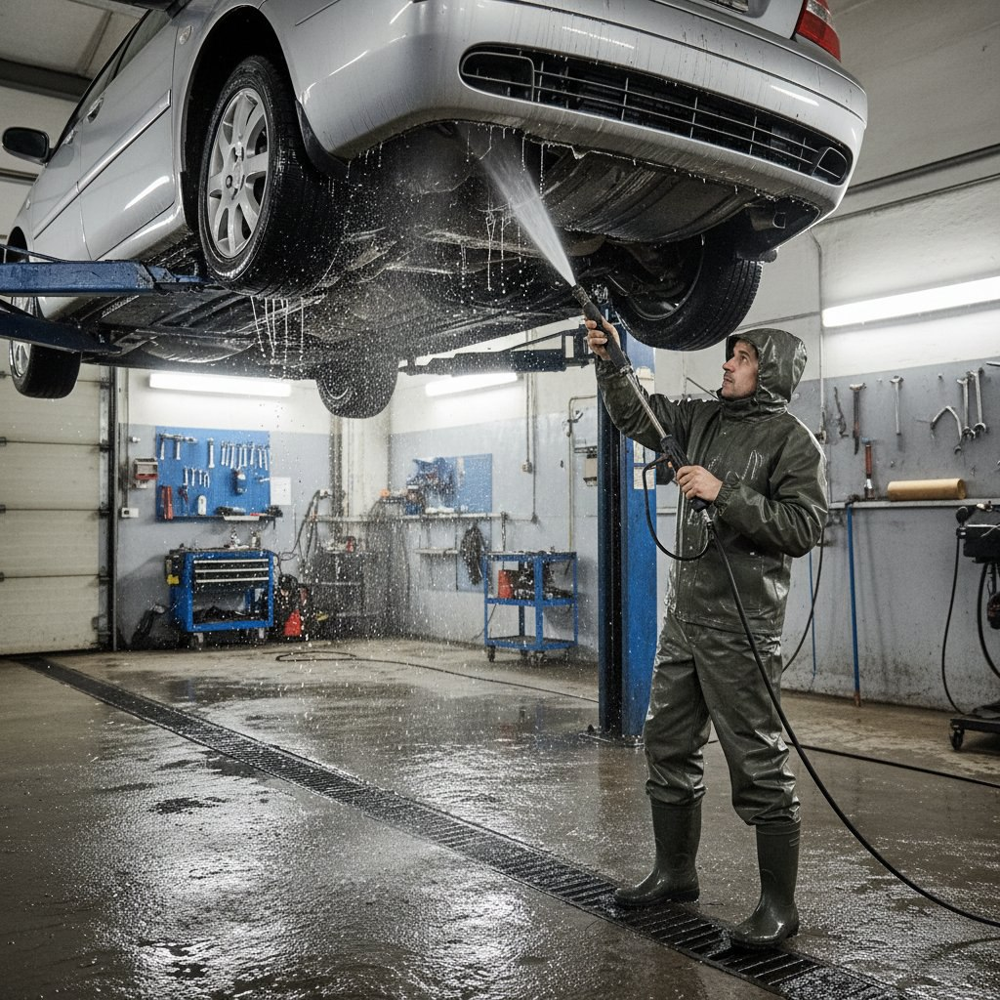
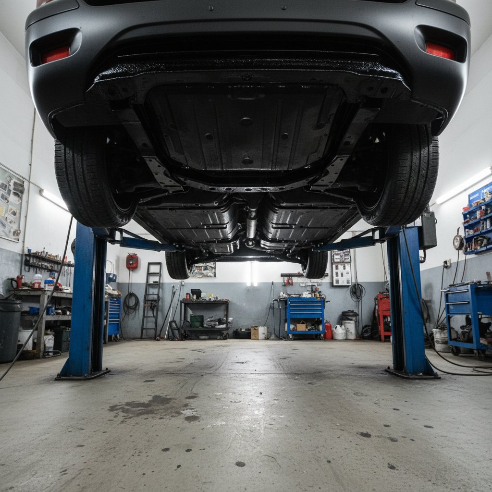
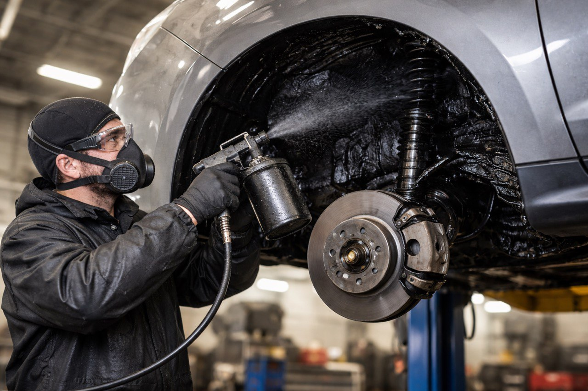
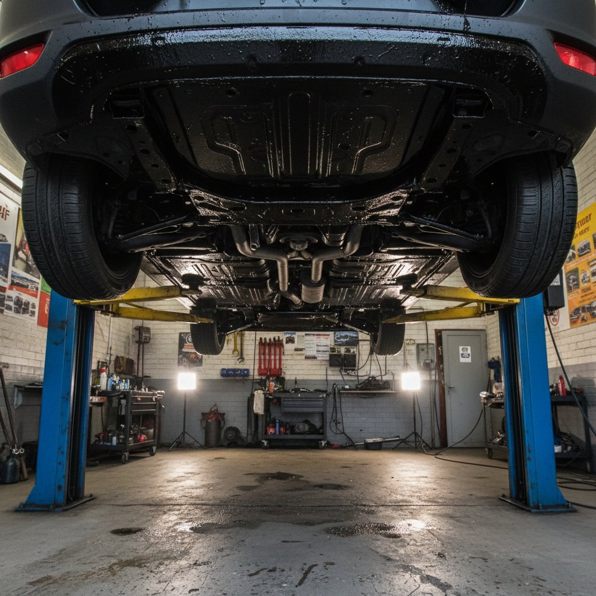
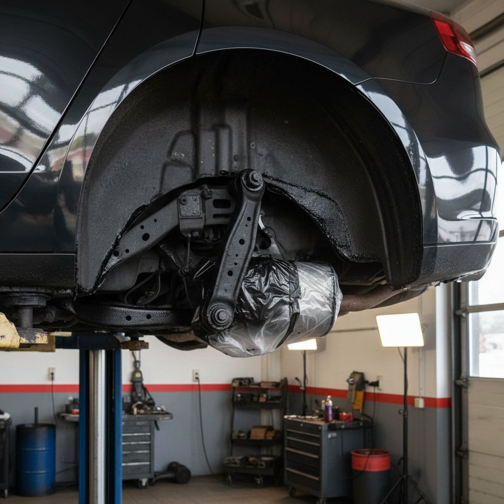

Что такое антикор и почему он жизненно важен вашему авто в Москве?
Антикор – это не просто нанесение состава, это комплексная защита кузова от агрессивной среды. Зимние реагенты на дорогах СВАО и ВАО, постоянная влажность, перепады температур – главные враги металла. Даже на новом автомобиле заводское покрытие не вечно, особенно в условиях мегаполиса. Мы предлагаем профессиональную обработку, которая создает барьер, продлевая жизнь вашей машины на 5-10 лет и сохраняя ее рыночную стоимость.
Мы работаем со всеми типами автомобилей
Легковые авто
Седаны, хэтчбеки, универсалы
Внедорожники
Кроссоверы, внедорожники, SUV
Коммерческий транспорт
Фургоны, микроавтобусы
Наши специалисты в Пушкинском районе и Реутове знают особенности каждой модели.
Почему клиенты с Севера и Востока Москвы выбирают нас
Гарантия до 3 лет
Прописана в договоре
Опыт 10+ лет
Обработали более 2000 авто
Немецкие материалы
Tectyl, Noxudol, Dinitrol
Бесплатная мойка
И сушка перед обработкой
Работаем рядом
В Пушкино и ВАО
Прозрачная цена
Фиксированная смета
Наши технологии защиты
Мы используем методы ингибиторной и барьерной защиты. Составы проникают в микропоры металла и вытесняют влагу, создавая эластичное, «дышащее» покрытие. Обработка проводится в теплом боксе с помощью профессионального оборудования, что гарантирует проникновение состава даже в самые скрытые полости.
Галерея работ: Процесс антикоррозийной обработки
Посмотрите, как мы работаем: от подготовки автомобиля до финальной проверки качества

Тщательная мойка
Полная очистка днища и скрытых полостей от грязи и реагентов

Профессиональная сушка
Используем теплый бокс для идеальной сушки всех элементов

Нанесение состава
Равномерное покрытие всех уязвимых мест специальными составами

Скрытые полости
Особое внимание труднодоступным местам кузова

Контроль качества
Тщательная проверка каждого обработанного участка

Идеальный результат
Защищенный автомобиль готов к любым погодным условиям
Полное руководство по антикоррозийной обработке автомобиля в Москве
Почему антикоррозийная обработка необходима каждому автомобилю в Москве?
Москва и Московская область представляют собой один из самых агрессивных регионов для автомобильного кузова. Зимние реагенты, которые активно используются на дорогах СВАО, ВАО и других округов столицы, содержат соли и химические соединения, которые буквально разъедают металл. В сочетании с высокой влажностью, перепадами температур и городской пылью, эти факторы создают идеальные условия для быстрого развития коррозии.
Коррозия – это не просто косметический дефект. Это процесс, который:
- Снижает структурную прочность кузова
- Уменьшает безопасность автомобиля при авариях
- Приводит к дорогостоящему ремонту
- Существенно снижает рыночную стоимость авто
- Может вызвать проблемы с электроникой и проводкой
Как работает профессиональная антикоррозийная защита?
Наша технология обработки включает несколько ключевых этапов, каждый из которых критически важен для долговременной защиты:
1. Подготовительный этап
Перед нанесением любого состава автомобиль проходит тщательную подготовку. Мы используем профессиональную мойку высокого давления, которая удаляет не только видимую грязь, но и микрочастицы реагентов, застрявшие в труднодоступных местах. Особое внимание уделяется днищу, колесным аркам и скрытым полостям.
2. Сушка в теплом боксе
После мойки автомобиль помещается в теплый бокс с температурой 25-30°C. Это необходимо для полного испарения влаги из всех микротрещин и полостей. Нанесение состава на влажную поверхность значительно снижает его эффективность и адгезию.
3. Обработка скрытых полостей
Скрытые полости – это главные «враги» кузова. Вода и реагенты скапливаются в порогах, лонжеронах, дверях, стойках и других закрытых пространствах. Мы используем специальные тонкие распылители, которые позволяют доставить состав в самые отдаленные уголки кузова.
4. Защита днища и колесных арок
Днище автомобиля подвергается наибольшему воздействию. Мы наносим эластичные мастики, которые не только защищают от коррозии, но и обеспечивают шумоизоляцию. Колесные арки дополнительно защищаются от абразивного воздействия песка и гравия.
Какие материалы мы используем?
Мы работаем только с проверенными немецкими производителями:
Tectyl (Valvoline)
Антикоррозийные составы на основе ингибиторов коррозии. Образуют эластичную, "дышащую" пленку, которая защищает металл, но позволяет испаряться конденсату. Идеально подходят для скрытых полостей.
Noxudol
Шведские материалы, известные своей экологичностью и эффективностью. Содержат ингибиторы ржавчины и восковые компоненты, создающие долговечное покрытие.
Dinitrol
Профессиональная линейка для комплексной защиты. Отличается высокой адгезией и устойчивостью к механическим воздействиям. Используется для обработки днища и колесных арок.
Когда нужно делать антикоррозийную обработку?
Для новых автомобилей:
Идеальное время – первые 6-12 месяцев эксплуатации. Заводское покрытие еще не повреждено, но уже нуждается в дополнительной защите. Превентивная обработка позволяет сохранить кузов в идеальном состоянии на долгие годы.
Для б/у автомобилей:
Даже если на кузове уже есть небольшие очаги коррозии, профессиональная обработка может остановить процесс. Мы предварительно зачищаем ржавые участки, наносим преобразователь ржавчины и только затем – защитный состав.
Сезонность обработки
Лучшее время для антикоррозийной обработки – поздняя осень (октябрь-ноябрь), перед началом зимнего сезона. Однако мы работаем круглогодично в отапливаемых боксах, что позволяет проводить обработку в любое время года.
Гарантия и обслуживание
Мы предоставляем гарантию до 3 лет на все виды работ. Гарантия прописывается в договоре и включает:
- Бесплатный осмотр через 12 месяцев
- Дополнительную обработку проблемных мест при необходимости
- Консультации по уходу за обработанным автомобилем
Часто задаваемые вопросы
Сколько времени занимает обработка?
Полный цикл обработки занимает от 4 до 8 часов в зависимости от модели автомобиля и объема работ.
Можно ли мыть автомобиль после обработки?
Да, через 24 часа после обработки автомобиль можно мыть как обычно. Составы полностью полимеризуются и не смываются.
Нужно ли повторять обработку каждый год?
При использовании качественных материалов и профессиональном нанесении, повторная обработка требуется через 3-5 лет для поддержания максимальной защиты.
Влияет ли обработка на гарантию дилера?
Нет, антикоррозийная обработка не нарушает заводскую гарантию, если выполнена профессионально без повреждения штатных элементов.
Наши клиенты и отзывы
За 10 лет работы мы обработали более 2000 автомобилей различных марок: от бюджетных моделей до премиальных BMW, Mercedes и Audi. Наши клиенты – это жители Северного и Восточного округов Москвы, а также городов Подмосковья: Пушкино, Реутов, Балашиха, Королёв, Мытищи и других.
Мы гордимся тем, что 85% наших клиентов приходят по рекомендациям. Это лучшая оценка нашей работы.
Как записаться на обработку?
Вы можете оставить заявку на сайте, позвонить нам по телефону +7 962 628-97-77 или приехать к нам в сервис по предварительной записи. Мы работаем ежедневно с 9:00 до 21:00, включая выходные.
Перед обработкой мы проводим бесплатный осмотр автомобиля и составляем подробную смету. Вы всегда знаете, за что платите.
Заключение
Антикоррозийная обработка – это не расход, а инвестиция в сохранность вашего автомобиля. В условиях московского климата и агрессивной дорожной среды, профессиональная защита кузова является необходимой процедурой для каждого автомобилиста.
Не ждите, пока на кузове появятся первые признаки ржавчины. Защитите свой автомобиль сегодня и сохраните его ценность на долгие годы!
Наши услуги
Антикор днища и скрытых полостей
Комплексная защита самых уязвимых мест автомобиля от сколов и коррозии. Актуально для ежегодной эксплуатации по области и Москве.
ПодробнееАнтикор для новых и б/у автомобилей
Индивидуальный подход в зависимости от возраста и состояния авто. Максимальная сохранность для нового и «реанимация» для поддержанного.
Подробнее